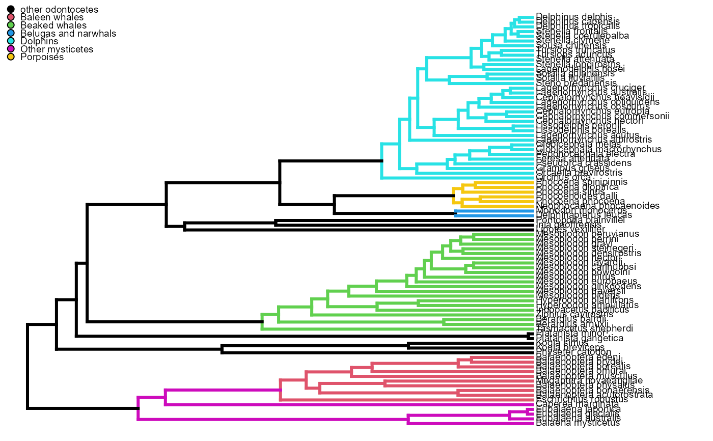

R/plotPaintedWhales.R
plotPaintedWhales.RdplotPaintedWhales plots the phylogeny from Steeman et al (2011), coloring the Dolphins (Delphinidae), porpoises (Phocoenidae), the Mysticetes, the baleen whales (Balaenopteridae), and the Beaked whales (Ziphiidae).
plotPaintedWhales(
show.legend = TRUE,
direction = "rightwards",
knitr = FALSE,
...
)Logical indicating if clade legend should be shown.
Phylogeny plotting direction. Should be set to "rightwards"
Logical indicating if plot is intended to show up in RMarkdown files made by the Knitr R package.
(the default) or "leftwards".
other arguments to be passed to phytools::plotSimmap
The whale phylogeny, with branch lengths being colored by a major whale taxonomic group.
Steeman, M. E., Hebsgaard, M. B., Fordyce, R. E., Ho, S. Y., Rabosky, D. L., Nielsen, R., ... & Willerslev, E. (2009). Radiation of extant cetaceans driven by restructuring of the oceans. Systematic biology, 58(6), 573-585.
help page from phytools::plotSimmap
plotPaintedWhales(knitr = TRUE)
#> no colors provided. using the following legend:
#> 1 Baleen whales Beaked whales
#> "black" "#DF536B" "#61D04F"
#> Belugas and narwhals Dolphins Other mysticetes
#> "#2297E6" "#28E2E5" "#CD0BBC"
#> Porpoises
#> "#F5C710"
